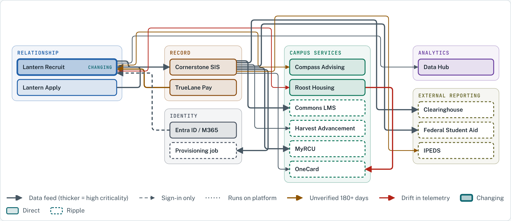

Cookbook Demos
Interactive demos from the Test Kitchen of The Higher Ed AI Cookbook. Every demo uses Riverside Christian University, a fictional institution.
Test KitchenRCU Systems Atlas

One source file of systems and interfaces, rendered on demand as an impact radius, a system-of-record map, and a drift report.